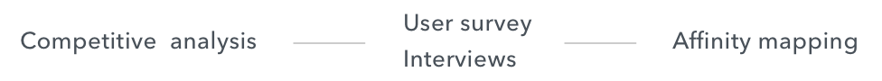
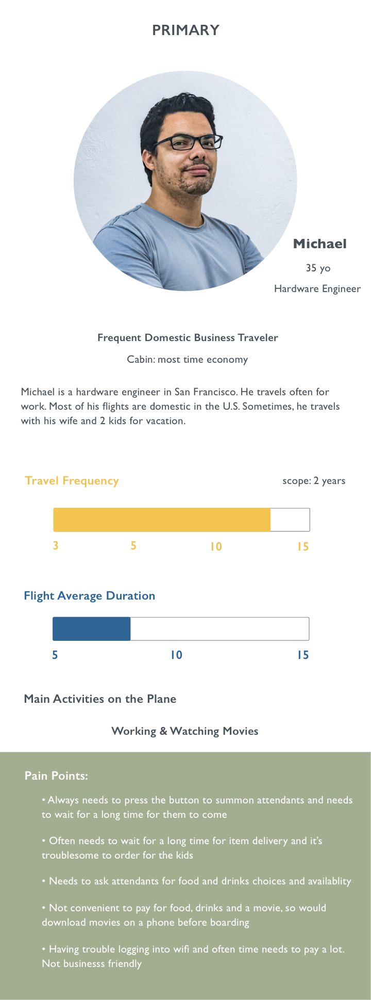
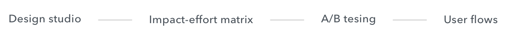
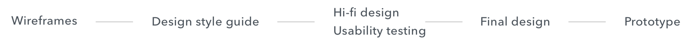
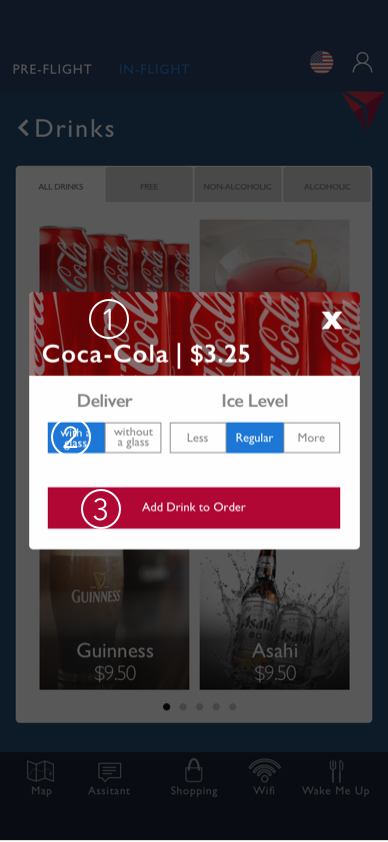
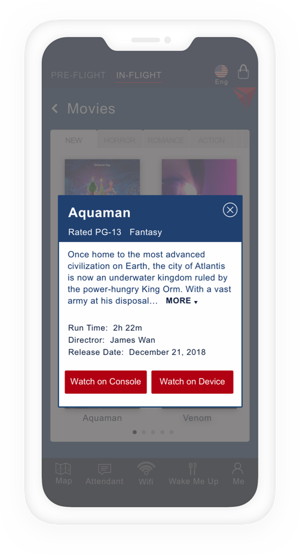

Project Overview
As air travel frequency keeps growing nowadays, airline companies are trying their best to bring the most out of their services. Delta Airline serves more than 180 million travelers, and they wanted to utilize new technologies such as app or website to facilitate customers using or ordering in-flight services and amenities, to create the best air travel experience.
TEAM
4 people
SPRINT
12 days
MY ROLE
project manager
researcher
lead UI/UX
PLATFORM
mobile app
How it started |
Currently the in-flight services are 1) manual (food and drink service, summoning an attendant), 2) dependent on the built-in-technology (movies, music, games, maps), or abstract (wifi, SkyMall). Before we started to design, there were several things to consider: What in-flight services would benefit from being made digital? What in-flight services might users best engage with before boarding the plane? Or once on the plane? How should users pay for premium services (wifi, alcohol)? How do the innovations impact the existing built-in screens?
|
|
Our task |
To make Delta in-flight services and amenities available and easy to order on their mobile devices and create a seamless experience among multiple digital devices. |
Research & discover

Competitive analysis We compared 4 airline companies with Delta and listed the core features. The highlited features were the ones that we may potentialy develop.
User survey & interviews To get the research started, we created a survey and received 54 responses from all over the world, with a main focus in the U.S. Then we conducted 8 follow-up interviews, seeking deeper insights.
Survey We designed a survey with a screener that helped us to focus on those who flew more than 3 times in the past 2 years, on long flights (5+ hours). Below are some questions and answers we received.
Interviews We conducted 8 phone call interviews to have more opinions about existing in-flight services.
- Some questions we asked:
- How much time do you typically spend on summoning attendants and waiting for your orders?
- Tell me about the last time you tried to purchase a product and obtain service in-flight?
- What are the biggest pains or hardest part related to that?
- People were saying:
- “When I wanted to have my sleep and I had to be up to take care of these things. Would be great to set a time for delivery.”
- “Looking through the items and finding what I actually need.”
- “It was a bit annoying. I pressed button for attendants but there was no indication if they got it or not. I was really tired and didn’t want to engage with anyone so was a bit frustrating because I also had to keep looking to see if they were coming and then wait again for them to bring my order.”
- “It usually took too long to have my order. Sometimes I didn’t want to talk to anyone after a long day and on a long flight.”
Affinity Mapping We grouped the data into different categories to get a better understanding of the users.
Main Findings
- Most important factors to consider:
- Focus on comfort
- Fast and human-centered service
- Convenient & broad selection
- Easy payment
- Better quality of built-in screen
- Free/cheap wifi
Main Findings
- Reasons for preferring to use phone on a plane:
- Familiarity of use
- Movies, games and music
- Convenience
- Seamless experience among apps
Synthesize & Define
Personas Based on our research, we profiled 3 personas. They represent 3 main different types of passengers.

Problem & Solution
Problem
Passengers on long-haul flights often have trouble to summon an attendant, don’t know which items and services are available, and suffer from long delivery times to their requests. When it’s not convenient to get in and out of their seats, they often give up and wait for an attendant to pass by. And while they rest, they still need to be alert if they want to get food or drinks when they are being served.The built-in screen is hard to use (for instance to switch between current time, sky map, or entertainments), and the screen is often of poor quality, which make many prefer to use their own devices during the flight.
Solution
Using new in-flight services embedded in the existing mobile app, flyers can contact flight attendants, request amenities, order food and drinks, shop online and enjoy their in-flight entertainment features. Their overall in-flight experience will be upgraded with seamless services and efficient payment, which both satisfy Delta’s business goals and its users needs.Solution Design Features
- Digital experience for amenities, entertainment and shopping
- Order for other passengers
- Easy digital payment combines with mileage points
- Embeded functions for messaging and summoning attendants, flying map, language switch and waking-up
Storyboard Here is a storyboard of our primary persona Michael’s experience on a flight, which summarizes some of his pain points.
Ideate & develop

Design Studio Doing a quick design studio among team members is the best practice to conceiving ideas for new product.
Impact-effort Matrix After the design studio, we came up with multiple ideas. In order to prioritize and narrow them down, we used an impact-effort matrix. We would focus more on high impact, low effort areas and less on high effort and low impact areas.
A/B Testing Once we finished prioritizing ideas, I conducted 3 rounds of A/B testings using paper prototypes to help decide which design layout to work on. Users prefered to use layout A because the interface was simpler and clearer. However, they were confused with the bottom IN-FLIGHT tab among other tabs.
Main Findings
- Language symbol is not so clear
- Remove waitlist
- Change hamburger symbol into account symbol
- Regroup and change 2 lines of bottom tabs into 1 line
- Preference to see images and be able to choose fast
User Flows Having decided on the design layout, we started to visualize the user flows. For this sprint, we chose to focus on 3 user flows: requesting amenities, selecting and watching movies, and ordering drinks.
Requesting Amenities
Selecting Movies
Ordering Drinks
Design & Deliver

Wireframes I designed initial conceptual wireframes and visuals of the major sections. I regrouped the original bottom tab bar items into PRE-FLIGHT and moved it along with IN-FLIGHT to the header for an improved navigation experience.

Design style guide Since we were embedding features to the existing app, we followed Delta’s style guide and picked some primary colors and typeface as our main color and typeface to ensure the professional and credible branding of Delta.
Hi-Fi design & Usability Testing We quickly did hi-fi design and then asked 2 people for usability testings. We tracked their feedback and consolidated it into interations.
- 1 The way to highlight IN-FLIGHT doesn’t make users realize they are under it.
- 2 The language flag symbol may indicate users which country they are in.
- 3 The input box is hard to see.
- 1 “Request” may indicate to call the attendant.
- 2 The cupcake symbol is not obvious for “Wake Me Up”.
- 1 The design to input multiple seats is complicated to implement and operate on a phone.
- 2 The sliding up request list is not consistent with other pop-up windows.

- 1 Pictures are too small to see on a phone, better to be two columns.
- 2 Need to have more categories.
- 1 Need to have more information about the movie.

- 1 There is no adding quantity and seat number options.
- 2 There are too many texts in a small box.
- 3 It’s not clear where the drink has been added.
Final Design
Log In & Category
Users can choose two ways to log in to check in-flight services: preview or check in. Once they enter, they will see that there are four types of in-flight service: entertainment, food & drinks, amenities and shopping.
Requesting Amenities
Users can tap pictures to choose which amenities to request during the flight. They can choose quantity and select a specific seat number. By default, the seat number is their own seat, but they can change in case they want to deliver to other flight passengers.

Selecting Movies
Under entertainment category, users can select movies, music, e-reading and games. If they select movies, they can filter by genre and see more details about the movie. They can also choose to watch on the built-in screen or on their own device. They can always switch between console and their device during the movie.
Ordering Drinks
If it’s an international flight, the snack menu will be food/meal menu. The snack-only menu is for domestic flights. Under the drinks menu, passengers can select free, alcoholic or non-alcoholic drinks. Once they select one, they can choose how they want it to be delivered, quantity and seat number, and pay through the app.
Prototype
Conclusion
As the project manager of this team, I learned how to assign tasks, how to manage time, how to make a decision and how to make the best out of team collaboration. We managed to sythesize a good amount of data and designed 3 different flows in a style consistent with the original application.
To make this product complete, we would need to design a convenient and efficient payment system and do more usability testing. As a moderate flyer myself, I know how much this In-Flight service app would greatly improve flyers experiences.